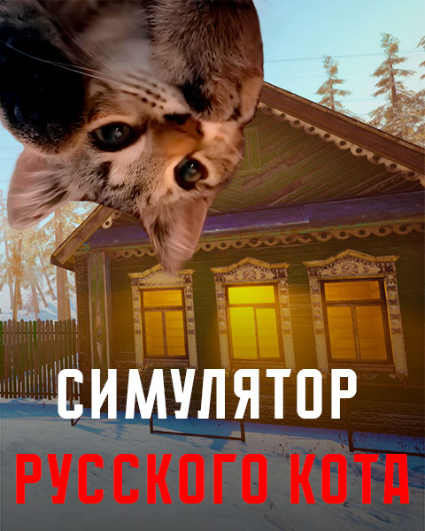
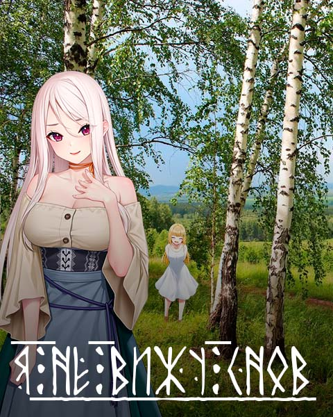

Симулятор Русского Кота
Медитативная игра, позволяющая взглянуть на мир глазами кота. Исследуйте квартиру и поселок, выполняйте задания и наслаждайтесь реалистичной графикой.
Играть

Я не вижу снов
Хоррор визуальная новелла. Вернувшись в родной город, студент сталкивается с жуткими тайнами прошлого и встречает духов славянского фольклора.
Играть
Симулятор Русской Собаки
Приключенческая игра от лица овчарки. Исследуйте локации, выполняйте задания и разговаривайте с хозяином через микрофон.
Играть